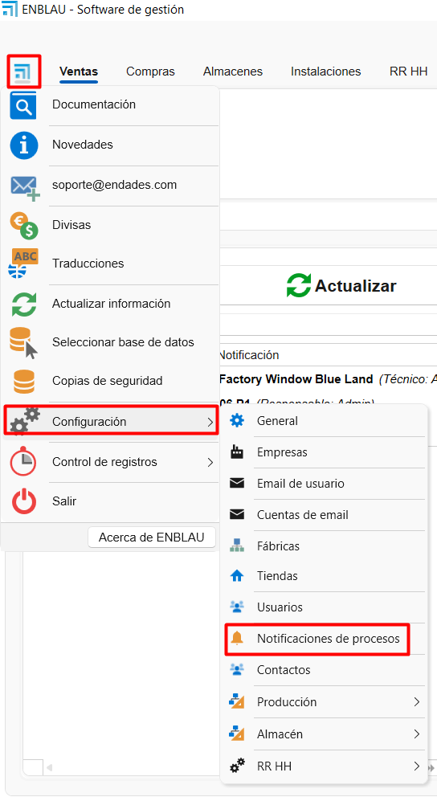
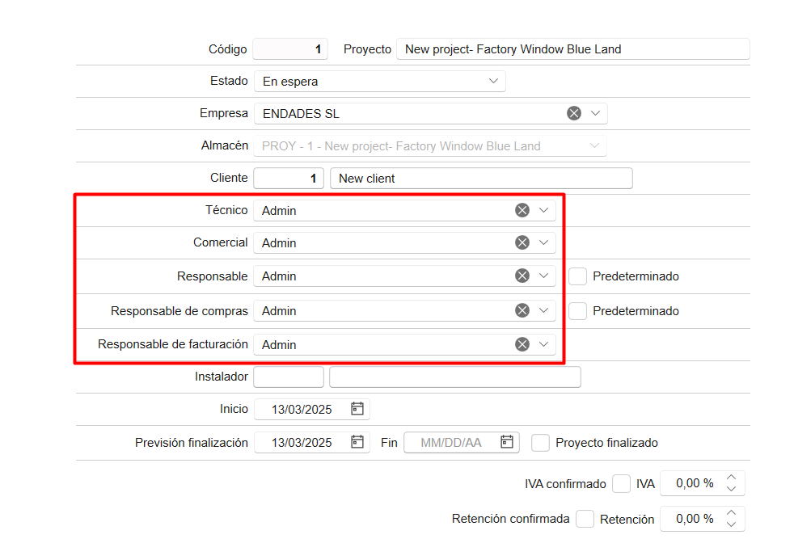

Configurazione iniziale di ENBLAU
1. Scopo
Il presente manuale è stato progettato per guidare i nuovi utenti nella configurazione iniziale di ENBLAU.
Questa configurazione include tutto il necessario affinché il cliente possa effettuare vendite, acquisti e l’emissione di fatture.
2. Configurazione generale

2.1. Configurazione della connessione con Logikal
-
Per connettersi con la fabbrica e i progetti di Logikal, è necessario indicare il percorso di installazione e la DLL di Logikal (unità di rete su cui punta Logikal).
-
Da Generale, vai su Logikal - Connessione e Progetti.

- Per connettersi alla fabbrica in Logikal, vai nella parte inferiore della finestra principale di ENBLAU, fai clic con il tasto destro su Connessione fabbrica e seleziona Connetti.

2.2. Generale
- Percorso di archiviazione: Indicare il percorso dove verranno salvati i documenti di ENBLAU e Logikal (unità di rete). Esempio:

Nota: Si consiglia di utilizzare un’unità di rete. Se non esiste, crearla.
- Informazioni sull’azienda: Compilare i campi necessari con le informazioni aziendali, come nome, codice fiscale, indirizzo, loghi, ecc.

2.3. Testi nelle vendite
- Aggiungere testi per i documenti di vendita, come osservazioni, condizioni, ecc.

Esempio di rapporto d’ordine:

3. Gestione utenti
- Per registrare nuovi utenti, accedere a Utenti.

- In Nuovo, è possibile creare nuovi utenti.

- Si aprirà una finestra per configurare le informazioni dell’utente (nome, indirizzo, email, telefono, ecc.), il tipo di utente (Tecnico, Commerciale, Officina, ecc. — è possibile assegnare più di un tipo) e i permessi.
I permessi possono essere assegnati solo dagli utenti di tipo amministratore.

- Una volta creato, l’utente potrà essere modificato in qualsiasi momento.
4. Configurazione degli account email
- Per configurare l’account email dell’utente, accedi a Email utente:


- Per configurare gli account email di ciascun utente, accedi a Account email:


- Da ciascuna sezione è possibile configurare l’indirizzo email, il nome utente, la firma e i server di posta in entrata/uscita IMAP e SMTP.
La configurazione dei server e delle porte deve essere corretta in base al provider utilizzato, per consentire l’invio e la ricezione delle email da report o notifiche.
4.1. Configurazione generale delle email
- Dalla sezione Generale → Email è possibile definire i destinatari in copia, l’oggetto e la modalità di invio delle email.

4.2. Possibili errori di autenticazione Microsoft
- Durante l’invio di un’email, può apparire un errore come questo:

LOG
Error: 535: 5.7.139 Authentication unsuccessful, SmtpClientAuthentication is disabled for the Tenant.
Visitare Invio SMTP autenticato in Exchange Online per maggiori informazioni.
L’errore è dovuto a un problema di autenticazione dell’account email, probabilmente causato da un aggiornamento dei protocolli di sicurezza di Microsoft 365.
-
Soluzione: Contattare l’amministratore di Microsoft 365.
Dalla console di amministrazione, seguire i passaggi riportati nel link sopra per configurare correttamente l’account Outlook in modo che possa sincronizzare le email da un’altra applicazione.
Assicurarsi che tutte le caselle siano selezionate nella sezione Gestione applicazioni di posta per l’utente in Microsoft 365.

Nota: Per gli account Microsoft Exchange, si consiglia di selezionare Modalità di invio 2 nel campo Modalità di invio email della sezione Generale.

5. Gestione aziende
- Se disponi di più aziende, puoi crearle nella sezione Aziende, cliccando su Aggiungi.
Poi compila le informazioni in Generale e Testi nelle vendite secondo le necessità di ciascuna azienda.


⚠️ Importante! Se non viene indicata un’altra azienda, i progetti utilizzeranno di default l’azienda definita nella configurazione di base in Generale.
Se devi emettere fatture con facturae, è necessario che le informazioni aziendali siano inserite nella sezione Aziende.
6. Configurazione progetti
- Dalla sezione Vendite → Progetti, accedi a Configurazione.


- Nella configurazione troverai un menu a tendina con diverse opzioni.
Per una configurazione iniziale, è necessario impostare Stati e Cartelle predefinite.

6.1. Stati
- Selezionando Stati, si aprirà una finestra per definire gli stati dei progetti (commesse).

6.2. Cartelle predefinite
- Selezionando Cartelle predefinite, si aprirà una finestra per definire le cartelle necessarie nella directory del progetto.

Nota: Le cartelle predefinite possono essere configurate per essere create automaticamente per ogni progetto.
7. Configurazione vendite
- Dalla sezione Vendite → Documenti di vendita, accedi a Configurazione.


- Nella configurazione troverai un menu a tendina con varie opzioni.
Per una configurazione iniziale, è necessario impostare Numerazioni, Forme di pagamento, Banche, Modalità di pagamento, Concetti di rottura, Classificazioni, Soggetti passivi (IVA) e Cartelle predefinite.

7.1. Numerazioni
- Selezionando Numerazioni, si aprirà una finestra per definire i tipi di numerazioni per i documenti di vendita, assegnando numeri progressivi ai documenti.

- Esempio: Tipo di documento "Preventivo", prefisso (Alpha) e numero (numero successivo) - PR1000272.

7.2. Modalità di pagamento
- Selezionando Modalità di Pagamento, si aprirà una finestra per definire le modalità di pagamento necessarie per generare le scadenze nelle fatture.

- Esempio: Indicare in quante rate e la percentuale che il cliente deve pagare a ogni scadenza.

7.3. Banche
- Selezionando Banche, si aprirà una finestra per inserire le informazioni della banca. Il nome e un codice.

7.4. Metodi di pagamento
- Selezionando Metodi di Pagamento, si aprirà una finestra per definire i diversi metodi con cui può essere effettuato il pagamento di una scadenza.

7.5. Concetti di rottura
- Selezionando Concetti di Rottura, si aprirà una finestra dove potrai aggiungere i diversi concetti da utilizzare al momento della registrazione di una rottura (ad esempio: “difetto di fabbricazione”, “rottura durante il trasporto”, ecc.)

7.6. Classificazioni
- Selezionando Classificazioni, si aprirà una finestra per definire le classificazioni dei preventivi.

La classificazione ha lo scopo di raggruppare e filtrare i documenti nell'elenco dei Documenti di vendita.
7.7. Soggetti passivi (IVA)
- Selezionando Soggetti Passivi (IVA), si aprirà una finestra per definire i tipi di soggetti passivi.

7.8. Directory predefinite
- Selezionando Directory Predefinite, si aprirà una finestra per definire le directory necessarie nella cartella di documentazione.

Nota: Le directory predefinite sono cartelle che possono essere configurate per generarsi automaticamente con ogni documentazione.
8. Configurazione degli acquisti
- Dal menu Acquisti, selezionare Documenti di Acquisto e accedere a Configurazione.


- Dalla configurazione, accederai a un menu a tendina con un elenco per configurare. Per una configurazione iniziale, è necessario configurare Numerazioni, Modalità di Pagamento, Classificazioni e Directory Predefinite.

8.1. Numerazioni
- Selezionando Numerazioni, si aprirà una finestra per definire i tipi di numerazioni per i documenti di acquisto, assegnando numeri progressivi ai documenti.

- Esempio: Tipo di documento "Ordine", prefisso (Alpha) e numero (numero successivo) - PE70000082.

8.2. Modalità di pagamento
- Selezionando Modalità di Pagamento, si aprirà una finestra per definire le modalità di pagamento necessarie per generare le scadenze nelle fatture. Vedrai che è la stessa finestra configurata dalla sezione Documenti di vendita.

8.3. Classificazioni
-
Selezionando Classificazioni, si aprirà una finestra per definire le classificazioni degli acquisti. Qui puoi definire i tipi di classificazione: • Rotture • Materiali aggiuntivi • Ordine ordinario (predefinito, quando un ordine non rientra nelle categorie precedenti)

Questa configurazione è importante affinché i dati siano correttamente riflessi nello studio dei costi del progetto.
8.4. Directory predefinite
- Selezionando Directory Predefinite, si aprirà una finestra per definire le directory necessarie nella cartella di documentazione.

Nota: Le directory predefinite sono cartelle che possono essere configurate per generarsi automaticamente con ogni documentazione.
9. Gestione delle notifiche
ENBLAU permette di configurare notifiche automatiche associate a diversi processi del sistema. Queste notifiche possono migliorare la tracciabilità e la comunicazione interna.
9.1. Quando vengono generate le notifiche?
Le notifiche possono attivarsi in eventi come:
- Pagamento della prima fattura.
- Invio di una produzione alla coda di produzione.
- Altri processi definiti dal flusso di lavoro.
9.2. Configurazione delle notifiche
Queste notifiche sono completamente configurabili dalla sezione Notifiche e processi:
- Possono essere indirizzate a un ruolo specifico (es. Commerciale, Tecnico, Produzione) o a una persona concreta.
- Possono essere associate automaticamente agli utenti collegati a progetti specifici.



9.3. Dove si ricevono le notifiche?
Le notifiche possono essere ricevute attraverso diversi canali:
- Finestra iniziale di ENBLAU
- App mobile enSITE
- Email, se l'opzione corrispondente è attivata
⚠️ In alcuni casi, potrebbe non essere opportuno riceverle via email, quindi si può optare per visualizzarle solo all'interno di ENBLAU o su enSITE.

9.4. Invio via email
Per far sì che le notifiche arrivino alla casella di posta dell'utente, deve essere selezionata la casella corrispondente nel suo profilo:

Nota:
Le notifiche vengono generate in base ai processi eseguiti dagli utenti all'interno del sistema.
10. Conclusione
Seguendo questo manuale, potrai effettuare una configurazione iniziale di ENBLAU per l’utilizzo nella creazione di documenti di acquisto e vendita.
 Español
Español
 English
English
 Italiano
Italiano
 Português
Português